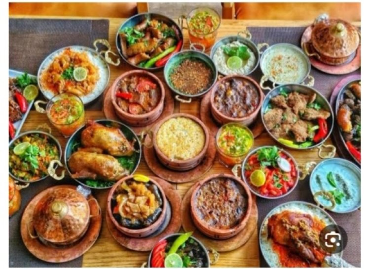
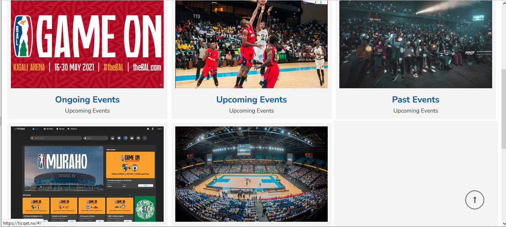
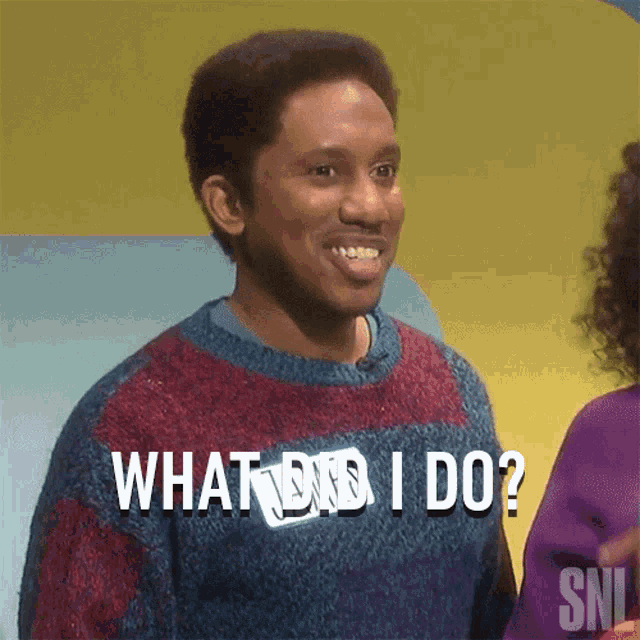

Your guide to navigating Rwandan culture—with a dash of humor!
Welcome to the Rwanda Culture Guide! This site will help you avoid cultural missteps while having a laugh or two. Learn what’s appreciated, what’s frowned upon, and enjoy a bit of humor as you go. Whether you're visiting, living, or just curious about Rwanda, this guide will help you feel more confident and respectful in navigating local culture.
Do Greet People Properly (Yes, *everyone* in the room)
Discover why not greeting someone in Rwanda is a no-go. Spoiler: They won’t chase you down, but they’ll remember.
Show Respect to Elders (They’ve earned it)
Learn about why respecting elders is a must in Rwandan culture. Hint: They’ve probably got better stories than you do.
Explore Local Cuisine (From ‘Ugali’ to ‘Isombe’)
These local dishes are like a delicious passport stamp for your taste buds. Go on, get adventurous—your stomach will be grateful!
Participate in Umuganda (Community Clean-Up Day)
Join the Rwandan community in *Umuganda*, a mandatory nationwide community service held on the last Saturday of each month. It’s a great way to give back and experience the true spirit of togetherness.
Attend Events at Kigali Arena (Concerts and Basketball Games)
Whether it’s a thrilling basketball match or a lively concert, Kigali Arena is the place to be for making friends and having a fantastic time. Don’t miss out on the electric atmosphere!
Enjoy Kigali’s Nightlife (Bring Friends and Party on Weekends)
Heading out to Kigali’s clubs or night concerts? Bring some friends and do it on the weekend so you can rest off any hangover the next day. It’s all about responsible fun!
Don’t Wear Inappropriate Clothing (We won’t arrest you, but we *will* judge!)
This tip covers dressing appropriately. And yes, simon will judge you.
Don’t Point Fingers at People (Unless you’re ready for the “what did I do?” stare)
Turns out, pointing fingers is seen as disrespectful. Remember to keep your hands in check!
Don’t Speak Without Thought About Sensitive Topics (Educate yourself first)
Instead of voicing uninformed opinions, visit national memorial museums and gain crucial insights into Rwanda's history and culture.
Understanding and respecting local customs can make a significant difference in your experience in Rwanda. We hope this guide has helped you gain insights into how to navigate social interactions and common courtesies, with a laugh or two thrown in for good measure. Now, go make a great impression!